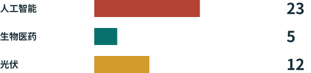

新的技术边界¶
用清楚的语言和图解，理解中国第48号公告、美国AI出口管制，以及中国开放模型的未来。

研究版本：2026年11月2日。 我们区分已经实施的登记要求、仍在征求意见的目录修改，以及我们自己的分析。本书用于公众理解，不是对具体交易的批准。
两个国家，不同的关口¶
中国：登记已经开始，目录修改仍是草案。 10月16日的公告涉及40项技术：人工智能23项、生物医药5项、光伏12项。其中拟禁止出口14项、拟限制出口26项。有关出口前临时登记自公告发布之日起实施，尚未完成的出口也在范围内。征求意见截至2026年11月15日。CN48 CNQA
美国：芯片管制正在实施，模型规则须区分文本和执行。 先进AI芯片受到许可、目的地、用户和用途检查。自2026年1月15日起，符合条件的H200等芯片从美国出口至中国或澳门可逐案审查。这不等于自动获批。AI扩散规则仍在现行公布文本中；BIS宣布不予执行，GAO于2026年5月对该政策的程序提出法律意见。US26 EAR742 USNE GAO26 EAR774
本书的核心发现¶
公告没有全面禁止中国开放模型。草案将已通过开源、论文等方式进入公共领域的AI技术排除在管理范围之外。对限制类AI技术的开源出口，草案提出自动许可等便利措施。已经公开的技术与首次公开的技术不能混为一谈。其他法律仍可能适用。CN48 CN-A1 CNQA
本书提供十章内容、40项技术索引、交互式情景说明和七种语言的PDF。官方附件原本是WPS文件；本书另提供本地转换的PDF阅读副本。原文件china_export_control.pdf是一份类器官研发演示稿，与本公告无关，因此不作为证据。